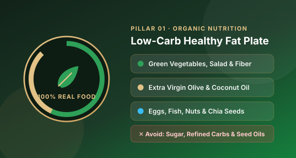
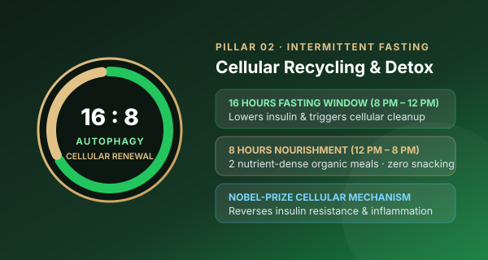
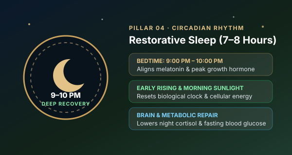
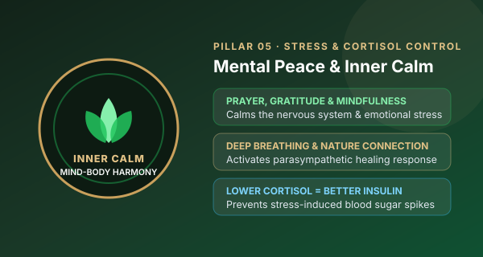

5 Pillars of JK Lifestyle — Science-Backed Natural Healing
The 5 Pillars of JK Lifestyle formulated by Dr. Muhammad Jahangir Kabir (ডা. জাহাঙ্গীর কবির) rest on five fundamental daily habits — Balanced Organic Diet, Autophagy (Intermittent Fasting), Regular Exercise, Adequate Sleep, and Mental Peace — that strengthen natural immunity and awaken the body's self-healing capacity.
Health Philosophy & How The 5 Pillars of JK Lifestyle Work
Muhammad Jahangir Kabir’s health philosophy centers on learning the art of maintaining wellness by preserving the body’s natural immunity. When illness occurs, he emphasizes addressing the root causes of disease through lifestyle modification rather than relying solely on medication — backed by WHO preventive health principles and the 5 Pillars of JK Lifestyle.
1. Balanced Diet (সুষম প্রাকৃতিক খাবার)
Pillar One · Organic NutritionThe first of the 5 Pillars of JK Lifestyle: healthy eating habits built on organic and natural whole foods — green vegetables, healthy fats (extra virgin coconut & olive oil from Ultimate Organic Life), eggs, fish, chia seeds, and nuts — while avoiding refined sugar, soybean oil, and chemically processed items.

2. Autophagy (অটোফেজি ও ফাস্টিং)
Pillar Two · Cellular RenewalRecognizing the vital role of autophagy in maintaining healthy cells, Dr. Jahangir Kabir (ডা. জাহাঙ্গীর কবির) strongly advocates regular or intermittent fasting (such as 16:8 fasting) to reverse insulin resistance and recycle damaged cellular components naturally.

3. Regular Exercise (নিয়মিত ব্যায়াম)
Pillar Three · Strength & VitalityIncorporating brisk morning walking, physical workouts, resistance and strength training at JK Fitness Arena, and an overall active daily routine to build lean muscle, burn visceral fat, and protect cardiovascular health.

4. Adequate Sleep (পর্যাপ্ত ঘুম)
Pillar Four · Circadian RecoveryGoing to bed early between 9:00–10:00 PM and waking up early in the morning are essential practices for good health — supporting growth hormone secretion, brain detoxification, and deep metabolic repair.

5. Mental Peace (মানসিক প্রশান্তি)
Pillar Five · Mind-Body HarmonySince the mind and body are deeply connected, maintaining inner calm is crucial for overall well-being. Reducing chronic stress lowers cortisol and blood sugar spikes through prayer, gratitude, breathing exercises, and mindfulness.

+ Personalised Medical Guidance (ব্যক্তিগতকৃত পরামর্শ)
Tailored To Your ConditionDr. Jahangir Kabir and the Health Revolution clinical team tailor the 5 Pillars of JK Lifestyle to the type and nature of each patient's illness — ensuring safe, supervised healing and long-term wellness.

Beginner's JK Diet Chart & Food List (5 Pillars of JK Lifestyle)
Save or print this practical reference guide to start following the 5 Pillars of JK Lifestyle at home.
অনুমোদিত খাবার (Recommended Real Foods)
- স্বাস্থ্যকর ফ্যাট: এক্সট্রা ভার্জিন কোকোনাট অয়েল, এক্সট্রা ভার্জিন অলিভ অয়েল, দেশি ঘি ও মাখন।
- প্রোটিন: দেশি হাঁস-মুরগির ডিম, সামুদ্রিক ও নদীর তাজা মাছ, দেশি মুরগি।
- শাকসবজি ও সালাদ: ব্রকলি, ফুলকপি, বাঁধাকপি, শসা, টমেটো, পালং শাক ও সবুজ শাকসবজি।
- সুপারফুড ও বাদাম: অর্গানিক চিয়া সিড, ট্রাইকালার কিনোয়া, কাঠবাদাম (Almonds), আখরোট ও পেস্তা।
বর্জনীয় খাবার (Foods To Strictly Avoid)
- চিনি ও মিষ্টি: সাদা চিনি, গুড়, কোমল পানীয় (সফট ড্রিংকস), প্যাকেটজাত ফলের জুস, মিষ্টি।
- রিফাইন্ড কার্বোহাইড্রেট: সাদা ময়দা, পাউরুটি, বিস্কুট, কেক, ফাস্টফুড ও অতিরিক্ত সাদা ভাত।
- ইন্ডাস্ট্রিয়াল সিড অয়েল: সয়াবিন তেল, রাইস ব্র্যান অয়েল, সানফ্লাওয়ার অয়েল ও ক্যানোলা অয়েল।
- প্রসেসড খাবার: চিপস, ইনস্ট্যান্ট নুডলস, কৃত্রিম প্রিজারভেটিভ ও ট্রান্স-ফ্যাটযুক্ত খাবার।